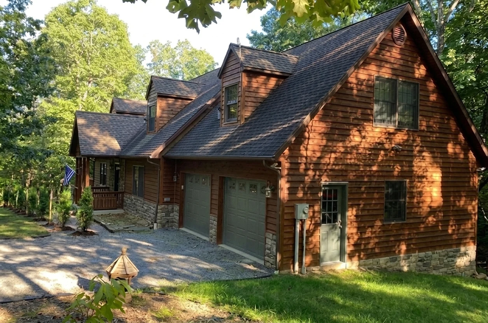

Planning record · Budgeting estimates, not quotes
Sale-prep estimates
Four visible work groups considered before listing: painting, faucets, cabinet hardware and landscaping. Low ranges assume owner labour; high ranges assume contracted work.
Current property evidence
Real prior-listing photography leads. Planned-work visualisations appear only inside the relevant work records below.
 Current condition
Current condition Current condition
Current conditionPainting
Palette updated 9 September 2026
Approved palette: hallway in SW 7008 Alabaster; primary bedroom in SW 9139 Debonair; upstairs bedroom in SW 6206 Oyster Bay; primary and upstairs bathrooms in SW 6204 Sea Salt; front/back and garage doors in SW 6208 Pewter Green. Deck: Dark Walnut solid stain; manufacturer and product not selected.
Kitchen Alabaster remains in the earlier scope; great-room and loft whites stay for sale. See the colour record for updated assignments. Door imagery uses the approved Pewter Green palette; all screen colours are approximate. Older visualisations of other work remain planning concepts, not exact paint or stain matches. The 2 September budget below excludes hallway and bedroom repainting and needs revised quantities and pricing.
 Planned-work visualisation
Planned-work visualisation
Planned-work visualisation Planned-work visualisation
Planned-work visualisation| Historical painting scope · 2 Sep | DIY | Contracted |
|---|---|---|
| Kitchen, main bath and upstairs bath · 3 gal plus primer | $220 materials | $800–$1,600 |
| Three entry doors and two garage doors over bonding primer | $180 materials | $500–$1,000 |
| Deck and porch floors · 810 sf · wash, scuff, two coats | $420 materials | $1,200–$2,000 |
| Subtotal | ≈ $800 | $2,500–$4,600 |
Delta faucets
All baths and kitchen
Planned schedule: four three-hole widespread lavatory faucets—two in the main bath, one upstairs and one in the guest bath—plus two shower trims, roman-tub trim on the jacuzzi and a two-hole kitchen faucet with soap dispenser.
Finish decided: Venetian Bronze. Delta’s oil-rubbed bronze sits beside antiqued-brass cabinet hardware and oak. The owner-found Delta Portwood widespread at $149 anchors the estimate; plumber must confirm existing tub and shower rough-in valves before ordering.
 Planned-work visualisation
Planned-work visualisation Planned-work visualisation
Planned-work visualisation Planned-work visualisation
Planned-work visualisation Planned-work visualisation
Planned-work visualisation| Venetian Bronze fixtures | Count | Materials | Plumber |
|---|---|---|---|
| Widespread lavatory · Delta Portwood at $149 | 4 | $596 | $600–$1,000 |
| Kitchen two-hole faucet · spout centre, handle right | 1 | $200–$350 | $150–$300 |
| Soap dispenser · third hole | 1 | $30–$60 | With faucet |
| Roman-tub trim · jacuzzi | 1 | $250–$450 | $150–$400 |
| Shower trim kits | 2 | $360–$700 | $300–$500 |
| Subtotal | 9 | $1,440–$2,160 | $1,200–$2,200 |
Lavatory and kitchen swaps may suit DIY work. Tub and shower costs depend on whether existing rough-in valves are Delta; confirm before ordering.
Cabinet hardware
Approximately 44 pieces
Antiqued brass decided. Bar pulls on kitchen doors and drawers; matching knobs on bathroom vanities. This matches door hardware the house has worn since 2008 and pairs with Venetian Bronze plumbing.
Working count: about 26 kitchen pieces, 8 main-vanity pieces, 8 upstairs and 2 half-bath pieces.
| Hardware | DIY | Handyman |
|---|---|---|
| Approximately 44 pulls and knobs, bulk packs, drilling jig | $200–$400 | +$150–$300 install |
| Subtotal | $200–$400 | $350–$700 |
Landscaping
Four moves visible in listing photography
Planned work: evergreen privacy row along the west edge, restored lawn, regraded and topped gravel drive, and a gravel path to a completed firepit using stone already on site plus steel insert ring and cap stones.
The firepit location is open lawn east of the septic-cover garden and north toward the house—not at the shed.
Current condition Planned-work visualisation
Planned-work visualisation| Landscaping scope | DIY | Contracted |
|---|---|---|
| 12–14 arborvitae or spruce along west edge | $700–$1,100 · 3 gal | $2,000–$4,500 · 5–6 ft planted |
| Topsoil patches and overseed · 8–10k sf | $300–$600 | $800–$1,800 hydroseed |
| Driveway regrade and 2-in gravel top-up · 20–30 ton | $800–$1,400 delivered | $1,000–$2,000 |
| Gravel path to firepit · about 90 × 3 ft | $250–$450 | $400–$1,000 |
| Firepit insert ring, cap adhesive and pad gravel | $150–$400 | $300–$800 |
| Subtotal | $2,200–$3,950 | $4,500–$10,100 |
Historical budget
2 September budgeting estimates, not contractor quotes. Excludes hallway and bedroom repainting; revise painting and total for the approved palette.
| Item | DIY-lean | Contracted |
|---|---|---|
| Painting | ≈ $800 | $2,500–$4,600 |
| Faucets · Venetian Bronze | ≈ $1,900 | $2,650–$4,400 |
| Cabinet hardware · antiqued brass | ≈ $300 | $350–$700 |
| Landscaping | ≈ $3,000 | $4,500–$10,100 |
| Total | ≈ $6,000 | $10,000–$19,800 |
Paint and landscaping carry most photographic impact. Faucet and hardware choices matter most during a showing, where buyers encounter the kitchen first.
Ask what will be complete before listing
Request current property information or arrange a showing.
realtor@stevenhay.com